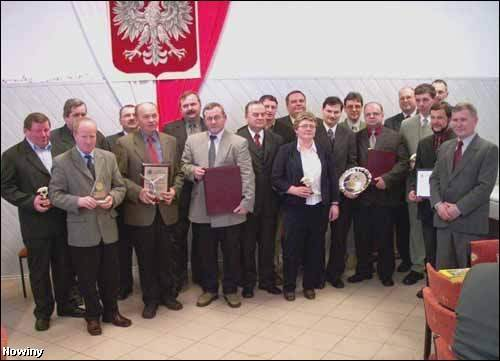

Autor: Krzysztof Urbanski, Dziennik Nowiny , 2004-01-26
Najlepsze firmyLaury dla lokalnego biznesu - za eksport, zwalczanie bezrobocia i podatki 
Wyróznienia otrzymalo kilkanaœcie firm z gminy Radomyœl Wielki. Andrzej Hosaja, dyrektor Zakladów Gumowych odbiera "Skrzydla", czyli statuetke dla najlepszego eksportera w gminie.
RADOMYŒL WIELKI. Tytul lokalnego lidera eksportu oraz nagrode za najwieksze osi¹gniecia w zwalczaniu bezrobocia otrzymaly Zaklady Gumowe Geyer&Hosaja w Partyni. Wyróznienia otrzymalo takze osiemnaœcie innych firm z gminy Radomyœl Wielki. Grawertony, statuetki i dyplomy dla radomyskiego biznesu wreczyl po raz drugi burmistrz Józef Rybinski, który zaznaczyl, ze rozwój firm jest w interesie wszystkich mieszkanców gminy. - Nasze statystyki mówi¹ ze jedno miejsce pracy utrzymuje cztery osoby, a wiec rozwój waszej dzialalnoœci jest wazny nie tylko dla wladz gminy, ale przede wszystkim dla jej mieszkanców. Radomyœl Wielki to gmina, która zdecydowanie sprzyja prowadzeniu dzialalnoœci gospodarczej. Obowi¹zuj¹ tu najnizsze podatki w powiecie i jedne z nizszych w regionie. Z tytulu ulg dla przedsiebiorców do budzetu gminy trafia ok. 700 tys. zl mniej. Obecny na uroczystoœci Ireneusz Drzewiecki, wiceprezes Agencji Rozwoju Regionalnego MARR z Mielca, zachecal do starania sie o dotacje unijne i korzystanie z uruchomionego niedawno funduszu pozyczkowego dla malych i œrednich przedsiebiorstw.
Miros³aw Wnuk © 2006-2003 |